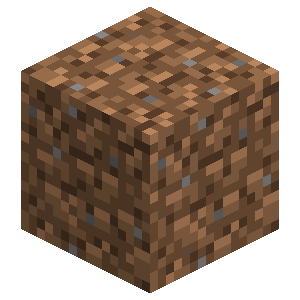
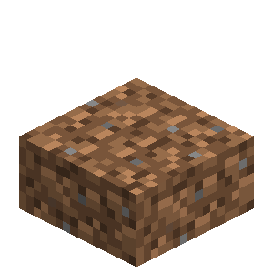
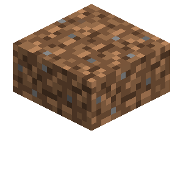

About
The dirt slab is a decorative block that can be combined into a single block. Dirt slabs come in three different variants normal, coarse, and rooted.
Config
Set Enable Dirt Slabs to Yes/true (default) to use them, or No/false to hide them. All dirt and grass slabs use this option.
Making Path Slabs
Any variant of dirt slab can be made into a dirt path slab by using a shovel on it.
Placing Plants
Only the top and double variants support plants normally. However, if the Slabbed mod is installed the bottom variant will support plants as well.
Breaking
Breaking a single upper or lower dirt slab drops one slab. If however, two dirt slabs are put together they act as a whole block and when broken they will drop two slabs instead of one.
Double Slabs
Only two dirt slabs of the same type can form a double slab unless a different mod changes this behavior.
Crafting Recipe



Dirt Slab

| Renewable | Yes (Crafting) |
| Stackable | Yes (64) |
| Waterloggable | Yes |
| Tool | Any tool, but the shovel is the quickest! |
| Blast Resistance | 0.5 |
| Hardness | 0.5 |
| Luminous | No |
| Transparent | Double: No Single: Partial |
| Catches fire from lava | No |